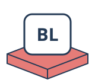
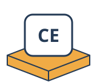
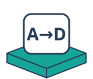
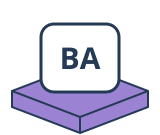
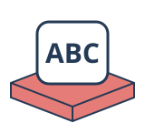

MATHS WEDNESDAYS
Play with an idea.
Choose an activity. Try something out. See what you discover.
Puzzles & strategy
Mastermind
Choose your colours and holes. Play against a secret code, or get help with a physical game.
Explore →15 game
Take cards from a row into your hand. Two players or a computer opponent; a separate magic-square page reveals the connection.
Explore →Dobble
Build seven matching cards from seven points. Explore why each pair shares one symbol, then play solo or race a friend.
Explore →Josephus
Ace to King in a circle. Keep one, remove one. Which card will remain?
Explore →Hanoi
Move the discs from peg A to peg C. Can you find the fewest moves? Choose from one to eight discs.
Explore →
Bridge Lab
Build a truss bridge, inspect tension and compression, then increase the load to test its limits.
Explore →Practise & remember
More challenges
Multiply to the target
Start at 1. Take turns multiplying by 2–9. First to reach or pass the target wins.
Explore →
Chase & escape
Watch points chase one another, or steer an escaping point away from its pursuers.
Explore →The divisor game
Take a number; give its remaining proper divisors to your opponent. Two players compete for the highest score.
Explore →
Secret messages
Encode, decode and crack Caesar ciphers. Explore all 26 shifts of the alphabet.
Explore →Create & explore
Pixel art
Paint one square at a time. Try mirrored patterns, undo strokes and save your artwork.
Explore →
Build a robot
Choose a head, eyes, mouth and antenna. Design your own robot and save it as an SVG.
Explore →
Enigma explorer
Change rotor settings and trace a letter through the machine.
Explore →